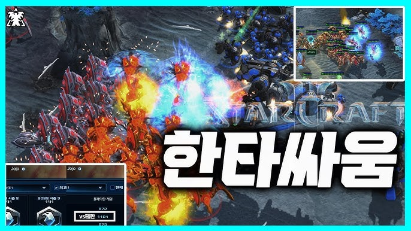
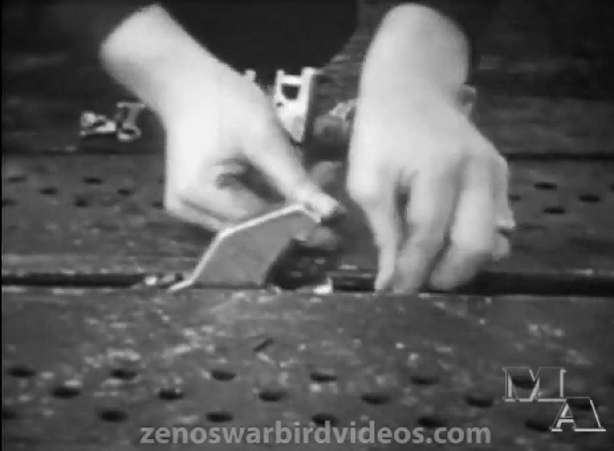
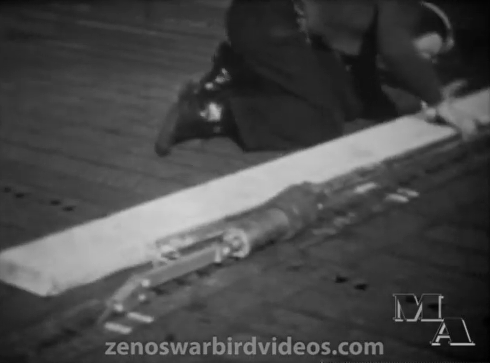
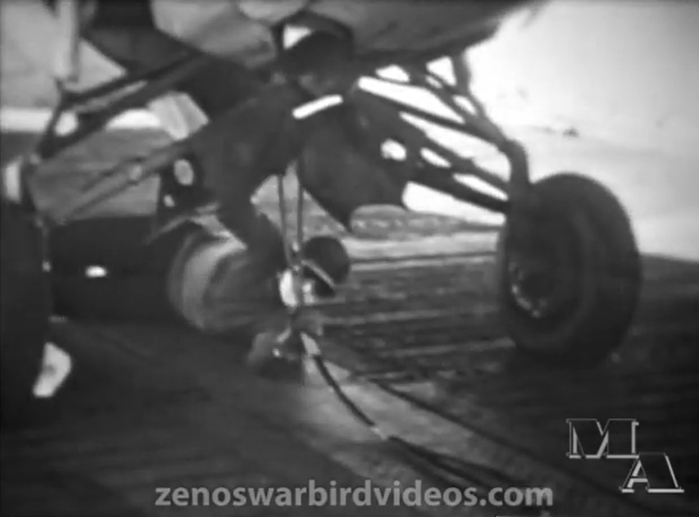
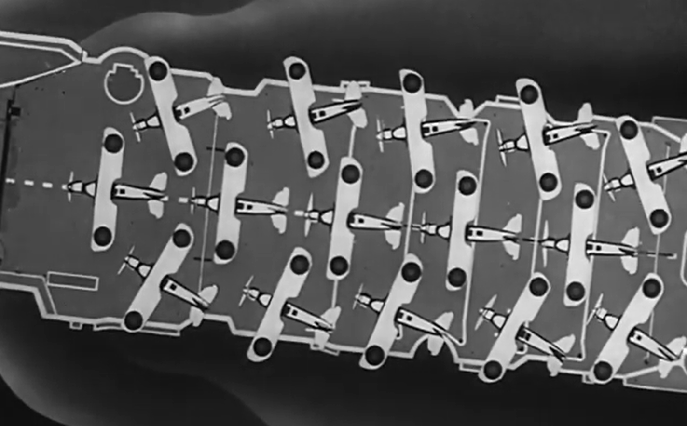
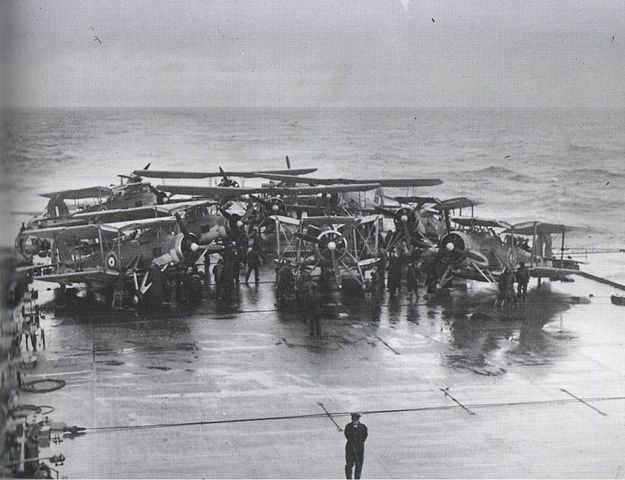
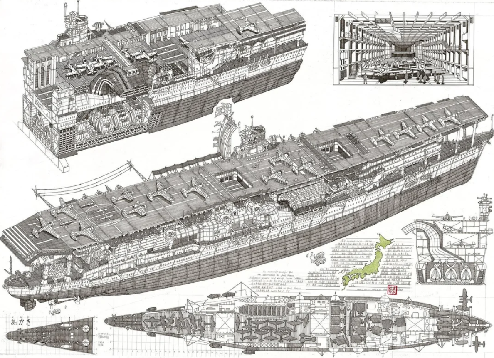
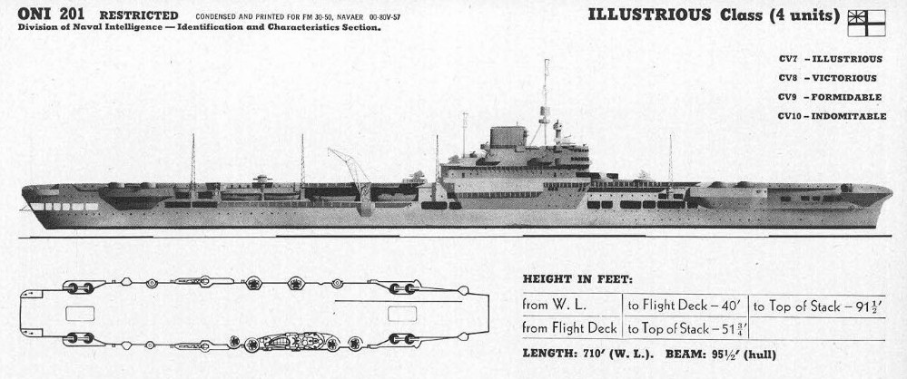
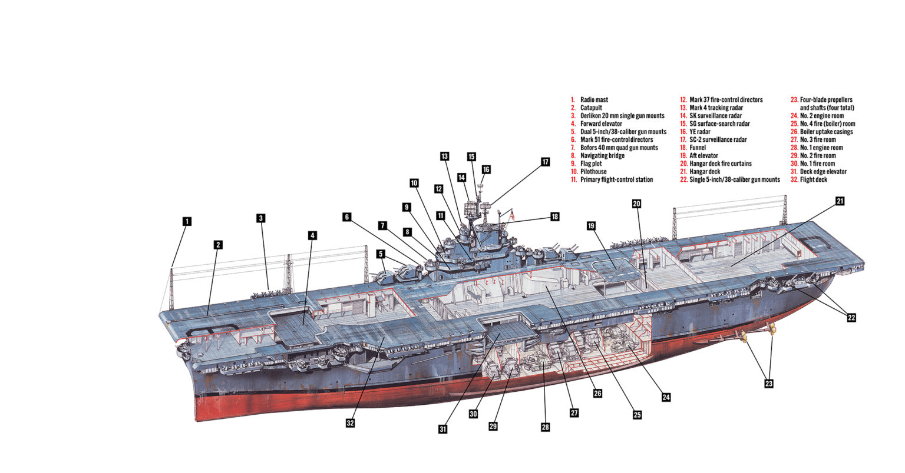

WW2 중 항모에서의 야간 작전 (19) - 왜 둘로 나눴을까?
게시: 2025-06-26T06:30:23+09:00
<스타크래프트를 안 해봤나?> 11월 11일, 타란토 습격을 위해 항모 HMS Illustrious에 대해 내려진 명령을 보면 매우 구체적이라서, 당시 항모 운용의 세부적인 구석까지 들여다 볼 수 있음. 요약하면 아래와 같음. 1) 정해진 출격 해역 'X'에 오후 8시에 도착. (이때는 아직 달이 안 떠서 어두운 상태) 2) 'X' 위치에 도착하면 현지의 풍향에 따라 바람을 향해 달리도록 침로를 변경한 뒤 30노트로 속도를 올림. (어뢰를 달아서 무거운 Swordfish들은 맞바람을 안지 않으면 이함을 못함) 3) 제1차 공격대 12대 날림. 4) 제1차 공격대의 출격이 끝나면 바람 반대방향으로 17노트 속력으로 달려 다시 출발 위치인 'X'로 이동. 5) 오후 9시에 다시 'X' 위치에서 아까와 똑같이 바람을 향해 30노트로 달리면서 제2차 공격대 9대를 날림. 6) 제2차 공격대의 출격이 끝나면 150도 방향으로 변침한 뒤 17노트로 항진하여 미리 정해진 함재기 회수 위치인 'Y'로 새벽 1시까지 이동한 뒤, 다시 바람 방향을 향해 25노트의 속도로 달림. (함재기의 안정적인 착함을 위해서도 맞바람이 필요) 7) 함재기 회수. 8) 함재기 회수가 끝나면 18노트의 속도로 이동하여 사령관 기함과 합류. 9) 모든 항로 변경은 신호 없이 수행할 것이며, 이착함 때를 제외하고는 정상적인 야간 지그재그 항진을 수행할 것. (잠수함의 공격을 회피하기 위한 전술) 10) 만약 적의 수상함 세력과 마주칠 경우, 일러스트리어스는 구축함 2대와 함께 즉각 후퇴, 나머지 함정들은 적과 교전. 보면 제1차 공격대를 날려보낸 뒤, 다시 원위치로 되돌아가서 바람 방향으로 달리면서 제2차 공격대를 날리느라고 항모와 호위함들을 야간에 180도 선회시키고 있음. 그러느라고 제1차 공격대와 제2차 공격대 사이에는 무려 1시간의 시간차가 존재. 특히 소드피쉬 조종사들에게는 매우 불안하게도, 언제든 항모가 적 수상함과 마주치면 소드피쉬들이 물고기밥이 되도록 내버려두고 도망치라고 명기되어 있음. 여기서 의문. 왜 영국해군은 21대의 소드피쉬를 하나의 편대로 구성해서 날려보내지 않았을까? 저렇게 조금씩 병력을 나누어 축차 투입하는 것은 병법에서 절대 피해야 할 일일 텐데? 하다못해 스타크래프트에서도 '한타 싸움'이 필승전략 아닌가?

설마 영국해군은 '멍청한 이탈리아군은 공습 1시간 뒤에 2차 공습이 있을 거라고 생각하지는 못하겠지?'라고 생각했을까? 아님. 영국해군도 상식적이었으므로 제2차 공격대는 훨씬 더 위험하고 성공 확률도 낮은 임무에 투입되는 것이라고 명확히 알고 있었음. 그래서 제1차 공격대에 12대, 제2차 공격대에 9대를 편성한 것. 그런데 왜? 이유는 영국해군 항모의 구조와 그에 따른 함재기 운용 교리 때문. <사출기? 흥, 그 따윈 필요없다> HMS Illustrious에는 유압식 사출기(catapult)가 1대 있긴 했음. 그러나 사실상 거의 사용되지 않음. 이건 영국제라서 자주 고장났기 때문만은 아니며, 당시 일본해군이나 미해군이나 항모들은, 특히 전투기나 급강하 폭격기는, 사출기를 이용하지 않고 이함시켰음. 프로펠러 함재기 특성상 그 정도의 이함 중량 정도는 사출기를 쓰지 않고도 이함이 가능했기 때문. 무거운 어뢰를 장착한 뇌격기들은 사출기를 사용하기도 했지만, 당시의 유압식 사출기(hydraulic catapult)는 현대적인 증기 사출기(steam catapult)처럼 강력한 출력을 내지도 못했고 사출에 시간도 오래 걸렸으며, 각종 사고도 자주 일으켰음. 그래서 차라리 항모의 항진 방향을 바람 불어오는 쪽으로 돌리고 전속력으로 달려서 강한 맞바람을 이용하여 이함시키는 것이 더 쉽고 빨랐음.

 

(WW2 당시의 유압식 사출기는 정규항모에서는 별로 자주 사용되지 않았는데, 이유는 이 비디오 ( https://youtu.be/Fx7Gto1zrrg?si=KHHLx2gz1YsA79za )에 나오는 것처럼 사출 절차가 너무 복잡하고 길었다는 점도 한몫. 저런 식으로 띄우려면 한 대당 10분 걸릴 듯. 그러나 정규항모보다 훨씬 짧은 비행갑판을 가진 호위항모(CVE)에서는 어쩔 수 없이 사출기가 필수. 특히 폭탄이나 어뢰를 장착한 Avenger 같은 대형 뇌격기를 띄우려면 사출기가 꼭 필요. 대신 사출기를 사용할 경우 전투기의 경우 한 10여 미터 정도만 활주하면 이함이 가능한 듯.)
특히나 복엽기인 Swordfish는 무거운 Mark XII 어뢰를 달고도 맞바람만 좋으면 사출기의 도움 없이도 잘 날아올랐음. 문제는, 그럼에도 불구하고, 어뢰를 장착한 소드피쉬는 아무래도 이함을 하기 위해 활주거리가 좀 더 길어야 했다는 점. 그래서 이함을 위한 달리기를 가벼운 전투기보다는 비행갑판 훨씬 뒤쪽에서 시작해야 했음. 거기서부터 문제가 시작됨.


(1941년 경 만들어진 이 영국해군 홍보 영화에 따르면 영국 정규항모에서는 저런 식으로 최대 21대의 함재기를 한꺼번에 출격시킬 수 있다고 설명. 원본은 https://youtu.be/Cp8OdEjcRKQ?si=MMusQtqSCfw8Us8r 그러나 소드피쉬는 전투기보다는 더 크고 무거운 함재기이고, 특히나 어뢰를 장착한 소드피쉬는 훨씬 더 무거운 함재기임.) 당시 항모들에서 함재기들이 출격할 때는 비행갑판 중간 정도의 위치에서 함재기가 달리기 시작하고, 그 뒤에는 그 다음에 이함할 함재기들이 주욱 늘어서서 대기해야 했음. 만약 한 대씩 한 대씩 격납갑판에서 엘리베이터로 비행갑판으로 이동시킨 뒤 이함시킨다면, 전체 편대를 이함시키는데 시간이 너무 오래 걸리게 되고, 그렇게 되면 먼저 이함한 뒤에 항모 상공에서 편대기들의 이함을 기다리며 선회하는 선두기들의 연료가 너무 많이 소모되므로 전체 편대의 항속거리가 짧아지는 결과를 낳기 때문임. 그런데 무거운 어뢰를 단 소드피쉬가 비행갑판 중간이 아나리 좀 더 뒤쪽에서 달리기 시작해야 하다보니, 갑판 뒷쪽에서 대기할 수 있는 소드피쉬의 대수가, 출발선에 선 1대를 빼면 최대 11대 밖에 안 되었음. 그래서 한번에 출격시킬 수 있는 소드피쉬 대수가 최대 12대 밖에 안 되었던 것.

(이 사진은 1941년 5월 24일, Illustrious급 항모 3번함인 HMS Victorious 비행갑판 뒤쪽에서 전함 비스마르크 사냥을 위해 어뢰를 장착한 채 대기 중인 Swordfish들. 세어 보니 11대임. 출발선상에 1대를 더 세운다면 딱 12대.)
그건 OK. 그렇다고 해도 격납고에서 대기 중이던 소드피쉬들을 엘리베이터로 끌어올려 출격시키는데 1시간이나 더 필요할 것 같지는 않은데, 왜 영국해군은 무려 1시간이나 간격을 두고 제2차 공격대를 출격시켰을까? 그건 함재기 운용 교리 때문. <아까기 꼴은 피하자> 전에 여러 번 언급한 바대로, 유럽 대륙 근해에서 활동해야 하는 영국해군 특성상 항모는 폭탄 몇 방을 얻어맞을 수 밖에 없다는 전제 하에 항모를 설계했음. 그래서 비행갑판엔 3인치(76mm) 두께의 장갑을 깔았고, 또 영국해군이 작전해야 하는 거칠고 추운 환경도 고려하여 격납고 공간을 밀폐형으로 만들었음. 결과적으로 영국해군 항모의 격납고는 밀폐형 강철 상자 형태가 되었는데, 덕분에 운용 가능한 함재기 숫자는 크게 줄었지만 대신 어지간한 적의 폭탄은 튕겨낼 수 있게 되었음. 그러나 만약 단 한 발의 폭탄이라도 비행갑판을 뚫고 들어가 폭탄과 연료를 잔뜩 품은 함재기들이 잔뜩 대기하고 있는 격납고에서 폭발한다면, 정말 끔찍한 일이 벌어질 수 밖에 없었음. 그런 위험을 줄이기 위해, 영국해군 항모에서는 급유는 격납 갑판에서 수행하더라도 폭탄과 어뢰 등의 무장을 함재기에 장착하는 것은 반드시 격납고가 아니라 비행갑판 위에서 하는 것을 원칙으로 했음. 그런 원칙은 너무 조심스러운 것 아닌가 싶지만, 미드웨이 해전에서 폭탄 딱 1방을 얻어맞았을 뿐인데 그 폭탄이 격납고의 어뢰와 폭탄을 유폭시키는 바람에 격침되어 버린 일본해군 항모 아까기의 운명을 생각하면 영국해군이 선견지명이 있었다고 할 수 있음.

(누군가가 정성스럽게 그린 아까기의 격납갑판 및 내부 구조 그림. 일본해군 항모들은 영국 항모와 미국 항모의 특성을 절반씩 가지고 있었는데, 즉 장갑 비행갑판은 포기하되 밀폐형 격납갑판을 가지고 있었음. 장갑 비행갑판을 포기한 이유는 방호력보다는 공격력을 택하여, 더 많은 함재기를 싣기 위한 것. 미해군처럼 태평양에서 활약해야 했던 일본해군이 밀폐형 격납갑판을 채택한 이유는 영국해군처럼 거친 소금물 파도와 바람, 추위 등으로부터 소중한 함재기를 보호하려는 것도 있었고, 또 필요시 야간에도 불을 켜놓고 정비작업을 해야 했는데 밀폐형 격납고가 아니면 야간에 불빛이 밖으로 새나갈 수 있다고 보았기 때문.) 그렇게 모든 무장을 격납고에서 미리 해놓지 못하고 갑판 위에 올려놓은 뒤에 하려다보니, 시간이 걸릴 수 밖에 없음. 어뢰 장착 작업은 꽤 힘들고 시간이 걸리는 일인데 더군다나 깜깜한 어둠 속에서 불도 제대로 못 밝히고 작업해야 했으므로 더욱 시간이 걸렸으므로, 제1차 공격대와 제2차 공격대의 사이에는 약 1시간의 간격이 필요했던 것.

(제2차 공격대를 출격시키는데 1시간이나 걸린 이유 중에는 일러스트리어스의 엘리베이터 위치도 한몫 했음. 저렇게 갑판 중앙 앞쪽과 뒤쪽에 하나씩 엘리베이터가 있다보니, 갑판 위의 함재기들이 다 이함하기 전에는 제2차 공격대를 비행갑판 위로 끌어올릴 방법이 없었음.)

(WW2 중반기부터 나오기 시작한 미해군 최신예 Essex급 항모들은 갑판 중앙 엘리베이터 2대 외에, 추가로 좌현 가장자리에도 3번째 엘리베이터를 달았음. 저 deck edge elevator는 유사시 (가령 파나마 운하 통과) 접어 놓을 수 있어서 더욱 편리.)